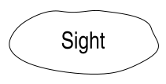
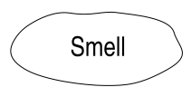
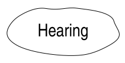
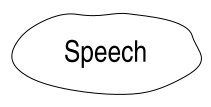

restart




This is not a real place. It's a void, and it holds the darkness from which it was created. You are not to stay here.
Instead, look for the places that are invisible on the maps. The ones where the ground seems to pull or bend downwards because the force is so strong.
Where you can hear trickles of water running underneath your feet. Places where the haze seems to mirror something or somewhere back to you.